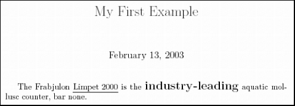

The Lore Documentation System , out of the box, is specialized for documenting Twisted. Its markup includes CSS classes for Python, HTML, filenames, and other Twisted-focused categories. But don’t think this means Lore can’t be used for other documentation tasks! Lore is designed to allow extensions, giving any Python programmer the ability to customize Lore for documenting almost anything.
There are several reasons why you would want to extend Lore. You may want to attach file formats Lore does not understand to your documentation. You may want to create callouts that have special meanings to the reader, to give a memorable appearance to text such as, “WARNING: This software was written by a frothing madman!” You may want to create color-coding for a different programming language, or you may find that Lore does not provide you with enough structure to mark your document up completely. All of these situations can be solved by creating an extension.
Lore works by reading the HTML source of your document, and producing whatever output the user specifies on the command line. If the HTML document is well-formed XML that meets a certain minimum standard, Lore will be able to to produce some output. All Lore extensions will be written to redefine the input , and most will redefine the output in some way. The name of the default input is “lore” . When you write your extension, you will come up with a new name for your input, telling Lore what rules to use to process the file.
Lore can produce XHTML, LaTeX, and DocBook document formats, which can be displayed directly if you have a user agent capable of viewing them, or processed into a third form such as PostScript or PDF. Another output is called “lint” , after the static-checking utility for C, and is used for the same reason: to statically check input files for problems. The”lint” output is just a stream of error messages, not a formatted document, but is important because it gives users the ability to validate their input before trying to process it. For the first example, the only output we will be concerned with is LaTeX.
Create a new input to tell Lore that your document is marked up differently from a vanilla Lore document. This gives you the power to define a new tag class, for example:
<p>The Frabjulon <span class="productname">Limpet 2000</span>
is the <span class="marketinglie">industry-leading</span> aquatic
mollusc counter, bar none.</p>
The above HTML is an instance of a new input to Lore, which we will call MyHTML, to differentiate it from the “lore” input. We want it to have the following markup:
Note that I chose class names that are valid Python identifiers. You will see why shortly. To get these two effects in Lore’s HTML output, all we have to do is create a cascading stylesheet (CSS), and use it in the Lore XHTML Template. However, we also want these effects to work in LaTeX, and we want the output of lint to produce no warnings when it sees lines with these 2 classes. To make LaTeX and lint work, we start by creating a plugin.
from zope.interface import implements
from twisted.plugin import IPlugin
from twisted.lore.scripts.lore import IProcessor
class MyHTML(object):
implements(IPlugin, IProcessor)
name = "myhtml"
moduleName = "myhtml.factory"
Create this file in a twisted/plugins/ directory (not a package) which is located in a directory in the Python module search path. See the Twisted plugin howto for more details on plugins.
Users of your extension will pass the value of your plugin’s name attribute to lore with the --input parameter on the command line to select it. For example, to select the plugin defined above, a user would pass --input myhtml . The moduleName attribute tells Lore where to find the code implementing the plugin. In particular, this module should have a factory attribute which defines a generator_ -prefixed method for each output format it supports. Next we’ll look at this module.
from twisted.lore import default
from myhtml import spitters
class MyProcessingFunctionFactory(default.ProcessingFunctionFactory):
latexSpitters={None: spitters.MyLatexSpitter,
}
# initialize the global variable factory with an instance of your new factory
factory=MyProcessingFunctionFactory()
In Listing 2, we create a subclass of ProcessingFunctionFactory. This class provides a hook for you, a class variable named latexSpitters . This variable tells Lore what new class will be generating LaTeX from your input format. We redefine latexSpitters to MyLatexSpitter in the subclass because this class knows what to do with the new input we have already defined. Last, you must define the module-level variable factory . It should be an instance with the same interface as ProcessingFunctionFactory (e.g. an instance of a subclass, in this case, MyProcessingFunctionFactory ).
Now let’s actually write some code to generate the LaTeX. Doing this requires at least a familiarity with the LaTeX language. Search Google for”latex tutorial” and you will find any number of useful LaTeX resources.
from twisted.lore import latex
from twisted.lore.latex import processFile
import os.path
class MyLatexSpitter(latex.LatexSpitter):
def visitNode_span_productname(self, node):
# start an underline section in LaTeX
self.writer('\\underline{')
# process the node and its children
self.visitNodeDefault(node)
# end the underline block
self.writer('}')
def visitNode_span_marketinglie(self, node):
# this example turns on more than one LaTeX effect at once
self.writer('\\begin{bf}\\begin{Large}')
self.visitNodeDefault(node)
self.writer('\\end{Large}\\end{bf}')
The method visitNode_span_productname is our handler for <span> tags with the class="productname" identifier. Lore knows to try methods visitNode_span_* and visitNode_div_* whenever it encounters a new class in one of these tags. This is why the class names have to be valid Python identifiers.
Now let’s see what Lore does with these new classes with the following input file:
<html>
<head>
<title>My First Example</title>
</head>
<body>
<h1>My First Example</h1>
<p>The Frabjulon <span class="productname">Limpet 2000</span>
is the <span class="marketinglie">industry-leading</span> aquatic
mollusc counter, bar none.</p>
</body>
</html>
First, verify that your package is laid out correctly. Your directory structure should look like this:
1st_example.html
myhtml/
__init__.py
factory.py
spitters.py
twisted/plugins/
a_lore_plugin.py
In the parent directory of myhtml (that is, myhtml/.. ), run lore and pdflatex on the input:
$ lore --input myhtml --output latex 1st_example.html
[########################################] (*Done*)
$ pdflatex 1st_example.tex
[ . . . latex output omitted for brevity . . . ]
Output written on 1st_example.pdf (1 page, 22260 bytes).
Transcript written on 1st_example.log.
And here’s what the rendered PDF looks like:
What happens when we run lore on this file using the lint output?
$ lore --input myhtml --output lint 1st_example.html
1st_example.html:7:47: unknown class productname
1st_example.html:8:38: unknown class marketinglie
[########################################] (*Done*)
Lint reports these classes as errors, even though our spitter knows how to process them. To fix this problem, we must add to factory.py .
from twisted.lore import default
from myhtml import spitters
class MyProcessingFunctionFactory(default.ProcessingFunctionFactory):
latexSpitters={None: spitters.MyLatexSpitter,
}
# redefine getLintChecker to validate our classes
def getLintChecker(self):
# use the default checker from parent
checker = lint.getDefaultChecker()
checker.allowedClasses = checker.allowedClasses.copy()
oldSpan = checker.allowedClasses['span']
checkfunc=lambda cl: oldSpan(cl) or cl in ['marketinglie',
'productname']
checker.allowedClasses['span'] = checkfunc
return checker
# initialize the global variable factory with an instance of your new factory
factory=MyProcessingFunctionFactory()
The method getLintChecker is called by Lore to produce the lint output. This modification adds our classes to the list of classes lint ignores:
$ lore --input myhtml --output lint 1st_example.html
[########################################] (*Done*)
$ # Hooray!
Finally, there are two other sub-outputs of LaTeX, for a total of three different ways that Lore can produce LaTeX: the default way, which produces as output an entire, self-contained LaTeX document; with --config section on the command line, which produces a LaTeX section; and with --config chapter , which produces a LaTeX chapter. To support these options as well, the solution is to make the new spitter class a mixin, and use it with the SectionLatexSpitter and ChapterLatexSpitter , respectively. Comments in the following listings tell you everything you need to know about making these simple changes:
from twisted.lore import default
from myhtml import spitters
class MyProcessingFunctionFactory(default.ProcessingFunctionFactory):
# 1. add the keys "chapter" and "section" to latexSpitters to handle the
# --config chapter and --config section options
latexSpitters={None: spitters.MyLatexSpitter,
"section": spitters.MySectionLatexSpitter,
"chapter": spitters.MyChapterLatexSpitter,
}
def getLintChecker(self):
checker = lint.getDefaultChecker()
checker.allowedClasses = checker.allowedClasses.copy()
oldSpan = checker.allowedClasses['span']
checkfunc=lambda cl: oldSpan(cl) or cl in ['marketinglie',
'productname']
checker.allowedClasses['span'] = checkfunc
return checker
factory=MyProcessingFunctionFactory()
from twisted.lore import latex
from twisted.lore.latex import processFile
import os.path
# 2. Create a new mixin that does what the old MyLatexSpitter used to do:
# process the new classes we defined
class MySpitterMixin:
def visitNode_span_productname(self, node):
self.writer('\\underline{')
self.visitNodeDefault(node)
self.writer('}')
def visitNode_span_marketinglie(self, node):
self.writer('\\begin{bf}\\begin{Large}')
self.visitNodeDefault(node)
self.writer('\\end{Large}\\end{bf}')
# 3. inherit from the mixin class for each of the three sub-spitters
class MyLatexSpitter(MySpitterMixin, latex.LatexSpitter):
pass
class MySectionLatexSpitter(MySpitterMixin, latex.SectionLatexSpitter):
pass
class MyChapterLatexSpitter(MySpitterMixin, latex.ChapterLatexSpitter):
pass